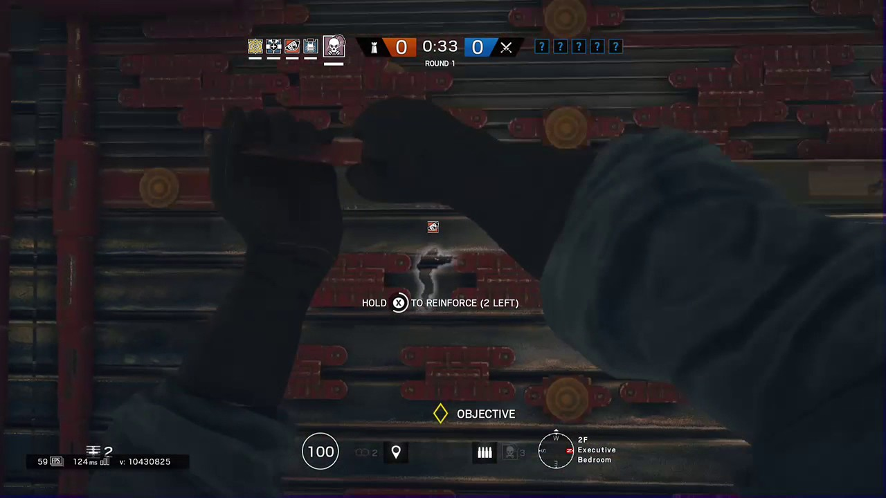
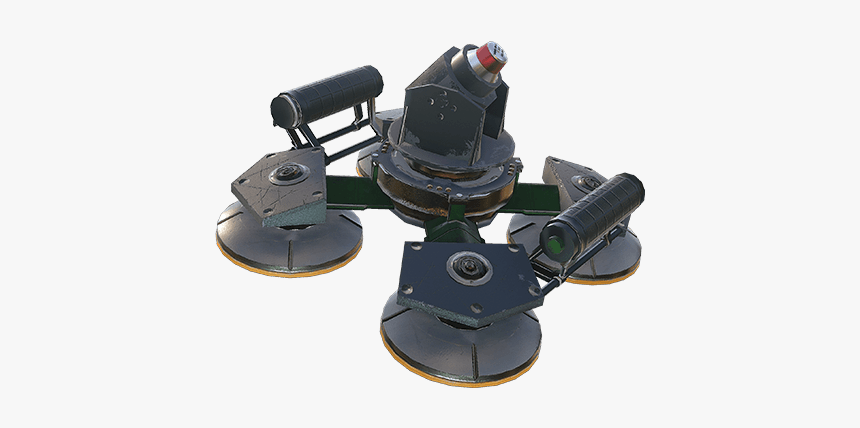

-try not to reinforce on rotation holes and beside a teamate, to maximisze efficiency.
In defence you immidiately spawn in as the operator to reinforce and place down your gadget to slow down and stop the attacking team. Try to shoot the drones in prep to deny any information gathering later on. If you are going to spawn peek (peek right where the enemy spawns at) break the window before action phase to get an early advantage.

-this right here is Jäger's ADS which can exterminate any attacker throwable in its range. This helps anchors a lot if the opposing team has grenades.
There are 2 main roles in defence, roamer and anchor.Anchors stay in the objective and hold angles. Anchors are usually the last line of defence if the roamers die or don't rotate back to site. The job of the roamer is to get kills and most importantly WASTE TIME.